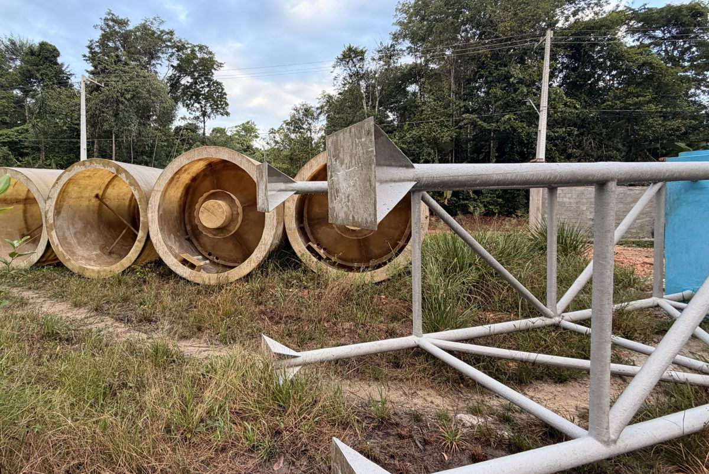

Início › PRFV
Por que PRFV?
O plástico reforçado com fibra de vidro é indicado para o saneamento pelas características abaixo.
- Alta resistência à corrosão, ideal para esgoto e produtos químicos
- Material leve, o que facilita transporte e instalação
- Longa vida útil e baixa necessidade de manutenção
- Fabricação sob medida para cada projeto
PRFV fabricado pela SANEAR
Tanques, reservatórios e peças produzidos na nossa fábrica.



Precisa de um equipamento em PRFV sob medida?
Pedir orçamento pelo WhatsApp